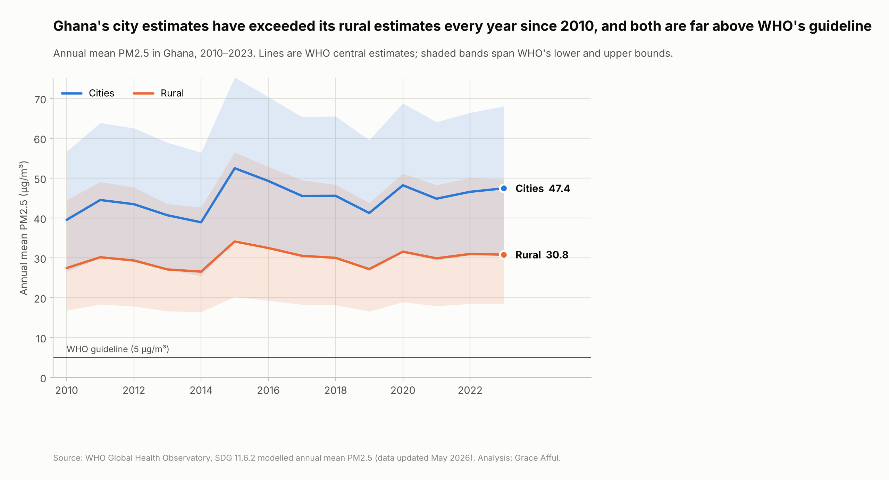
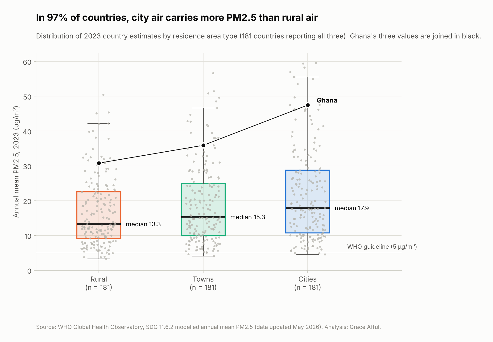
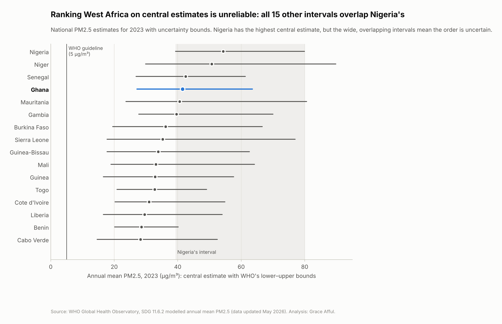

Dataset
- WHO Global Health Observatory, SDG indicator 11.6.2
- Modelled annual mean PM2.5
- Cities, towns, rural, urban and total
- Lower and upper uncertainty bounds
DATA VISUALIZATION · ENVIRONMENTAL HEALTH
A Python analysis of WHO's fine particulate matter (PM2.5) estimates for 227 countries and territories, 2010–2023, with a focus on Ghana and West Africa.
View the Notebook on GitHubPROJECT OVERVIEW
PM2.5 is the air pollutant most strongly linked to stroke, heart disease, lung cancer and respiratory infection. This project examines how exposure differs between cities, towns and rural areas, how regions changed between 2010 and 2023, and how much uncertainty surrounds the estimates.
The analysis combines country-level distributions, city–rural comparisons, regional trends and WHO's reported uncertainty bounds to give a more complete picture than national averages alone.
PROBLEM AND OBJECTIVE
Air pollution averages can hide large differences between places, and modelled estimates carry uncertainty that is often left out of charts. Leaving it out makes countries look more different, or more alike, than the data supports.
How does PM2.5 exposure differ by residence area type and region, and how should uncertainty change the way countries are compared?
MY CONTRIBUTION
I cleaned and checked the WHO dataset, designed the analysis around three research questions, built eight charts in Python and interpreted the results alongside WHO's guidance on responsible use of air quality data.
DATA AND METHODS
ANALYTICAL PROCESS
PROJECT RESULTS
| Area | 2010 | 2023 |
|---|---|---|
| Cities | 39.5 | 47.4 |
| Rural | 27.4 | 30.8 |
| National total | 35.1 | 41.5 |
In WHO's modelled central estimates, Ghana's cities have been above its rural areas in every year since 2010, and the gap grew from 12.1 to 16.6 µg/m³. Even WHO's lowest estimate for Ghana in 2023 (27.2 µg/m³) is more than five times the guideline.
DATA VISUALIZATION
Three of the project's eight charts, created in Python from the WHO dataset. Select a chart to open it at full size.



LIMITATIONS AND LESSONS
WHO advises that its raw city monitoring database should not be used to rank cities or compare countries directly. This project uses WHO's modelled estimates instead, which are designed for comparison but whose uncertainty varies widely between countries. WHO reports that data quality is poorer where ground monitoring is sparse.
Regional summaries count each country once and are not population-weighted. Annual means also hide seasonal peaks, such as West Africa's Harmattan dust season.
This project strengthened my skills in visualizing uncertainty, comparing distributions and presenting data responsibly.
PROJECT EVIDENCE
The GitHub repository contains the Jupyter Notebook, all eight charts and the WHO dataset, shared under WHO's terms of use for non-commercial public health purposes.